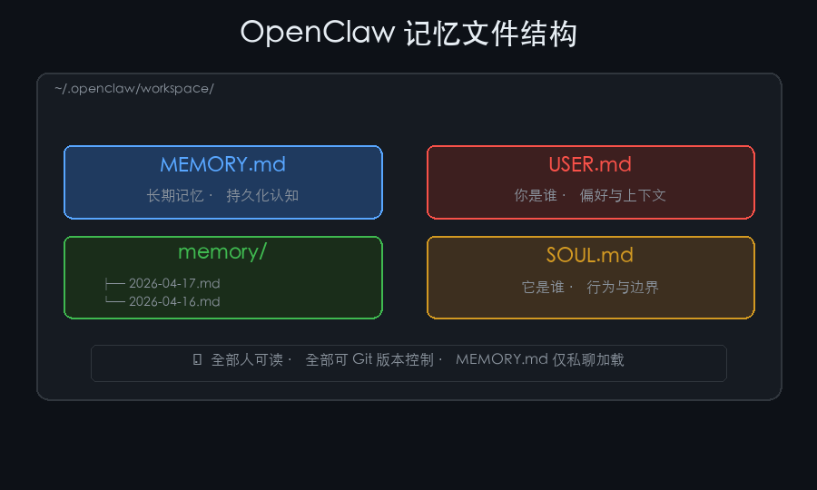
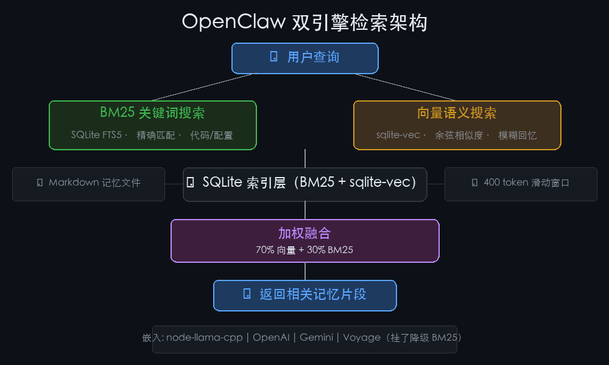
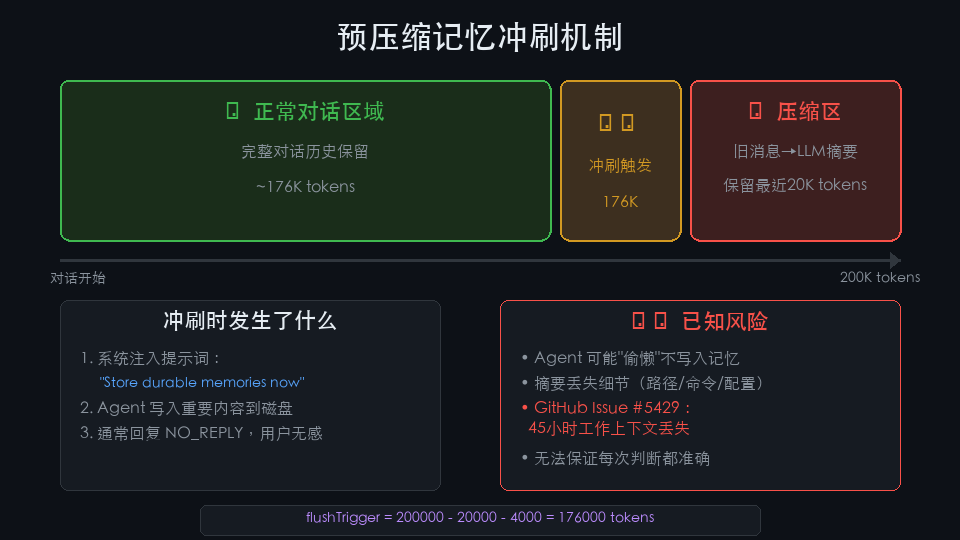

OpenClaw 记忆系统源码拆解：为什么它能记住你三个月前聊过什么
你有没有发现，OpenClaw 有个特别"犯规"的能力——每次新对话，它好像都记得你之前聊过什么。你说"用那个之前讨论的方案"，它真的知道你说的是哪个。
这在 AI Agent 圈子里其实是个稀罕事。大多数 Agent 每次启动都是"失忆"状态，你得重新交代背景。而 OpenClaw 只是一个开源项目，没有专有云服务，没有复杂的基础设施，它是怎么做到的？
最近花了一周时间把它的记忆模块源码读了一遍（主要是 memory-schema.ts、hybrid.ts、internal.ts 这几个核心文件），发现答案出乎意料地朴素。
记忆全靠 Markdown 文件，但不是你想的那样
OpenClaw 的记忆存在工作区目录下，结构非常简单：
~/.openclaw/workspace/
├── MEMORY.md ← 长期记忆，存持久化的东西
├── memory/
│ ├── 2026-04-17.md ← 今天发生了什么
│ └── 2026-04-16.md ← 昨天发生了什么
├── USER.md ← 你是谁
└── SOUL.md ← 它是谁第一眼看过去，这玩意也太好骗了吧？就几个 Markdown 文件？
但仔细想想，这个设计有个极其聪明的地方：所有记忆都是人可读的。用任何文本编辑器打开就能看、能改、能删。Agent 记错了什么，你直接改文件就行，不用调 API、不用查数据库。
更关键的是，MEMORY.md 只在私聊会话中加载，永远不会在群组对话里注入。这意味着你在私聊里告诉它的私人信息（比如工资、项目细节），不会在你拉它进一个百人群时泄露出去。这个安全设计是在架构层面做死，不是靠"提示词叮嘱"。

我自己用了几个月，感触最深的一点是：它的记忆文件可以直接放进 Git 仓库。git diff 就能看到 Agent 的"认知"发生了什么变化。这在需要审计和回溯的场景里，价值非常大。
SQLite 只是索引层，真正的创新在检索
如果只有 Markdown 文件，那搜索就只能靠 grep，效率极低。OpenClaw 的做法是在文件之上加了一层 SQLite 索引。
它用了一个很经典的双引擎方案：
- BM25 关键词搜索：基于 SQLite FTS5 全文索引。你搜"docker-compose"，它精确匹配这个词元。适合找代码符号、环境变量、配置项。
- 向量语义搜索：基于 sqlite-vec 扩展，用余弦相似度匹配语义。你说"之前那台跑网关的机器"，它能匹配到"Mac Studio 网关主机"。适合同义表达和模糊回忆。
然后两个结果按 70% 向量 + 30% BM25 加权融合。
有意思的是，OpenClaw 选了加权融合而不是 RRF（Reciprocal Rank Fusion）。RRF 会把分数拉平成序数排名——一个 0.98 的强语义匹配和 0.71 的弱匹配在 RRF 里差距会被稀释。加权融合保留了绝对值信息，强匹配就是强匹配。
内容分块用的是 400 token 滑动窗口，重叠 80 token。这个参数选择挺有讲究的：块太大搜索不精准，块太小上下文断裂。400 token 大约 1600 个中文字符，刚好是一两个自然段。
嵌入服务支持四种：本地 node-llama-cpp（零成本、离线）、OpenAI、Gemini、Voyage。如果全都挂了，系统降级到纯 BM25 搜索，不会崩。嵌入缓存用 SHA-256 去重，默认上限 50000 条——相同文本只嵌入一次。

嵌入服务对比：够用就行
OpenClaw 支持的几种嵌入方案各有适用场景：
| 方案 | 默认模型 | 特点 |
|---|---|---|
| 本地（node-llama-cpp） | embeddinggemma-300M-Q8_0.gguf | 零成本、离线，M1 Mac 约 50 tokens/秒 |
| OpenAI | text-embedding-3-small | 支持 Batch API（成本降50%），约 1000 tokens/秒 |
| Gemini | gemini-embedding-001 | 有免费额度，异步批处理 |
| Voyage | 可配置 | 需 VOYAGE_API_KEY |
对于个人单机使用，本地嵌入其实是最实用的选择。虽然在 M1 Mac 上只有 50 tokens/秒，但记忆文件的总量通常不会超过几百 KB，一次全量嵌入也就几秒钟的事。
Jina.AI 的创始人韩潇有个观点我觉得说得很对：向量数据库对 Agent 场景是"大炮打蚊子"。Agent 产生记忆的速度很慢（每次交互大约 10 秒），用 NumPy 暴力搜索 10 万条嵌入也只需要毫秒级。这就是为什么 OpenClaw 选了 SQLite 而不是 Pinecone/Weaviate 这种独立向量数据库。AutoGPT 后来也从向量数据库回归到了 JSON 文件存储，方向是一致的。
最让我在意的设计：预压缩记忆冲刷
长对话不可避免会逼近上下文窗口上限。OpenClaw 的上下文窗口是 200K token，但真正的可用空间没那么大——它会预留一部分给系统提示和工具定义。
当 token 数接近阈值时，系统会悄悄触发一个"记忆冲刷"操作。计算公式是：
flushTrigger = 200000 - 20000 - 4000 = 176000 tokens也就是说，当对话进行到 176K token 时，系统会注入一条提示："Session nearing compaction. Store durable memories now." 然后给 Agent 一次机会把重要的东西写到磁盘里。
这个过程对用户完全无感。Agent 通常回复 NO_REPLY，然后对话继续。
但这里有个问题：它依赖 Agent "自觉"写入记忆。如果 Agent 觉得没什么值得记的，它就真的不记了。GitHub Issue #5429 记录了一个真实案例——有用户因为静默压缩丢失了约 45 小时的工作上下文，Agent 完全不记得之前讨论了什么。
45 小时。想想看，几乎一周的工作量。
压缩本身的设计也有取舍：它只保留最近 20000 tokens 的原始对话，更早的消息被替换成 LLM 生成的摘要。摘要保留大意，但细节——文件路径、精确命令、配置值、决策推理过程——全丢了。
预压缩冲刷机制在一定程度上缓解了这个问题，但它不是一个完美方案。你没法保证 Agent 每次都能准确判断什么值得记住。

横向看一圈，Markdown-first 方案真的特别
把 OpenClaw 放到更大的格局里看，你会发现它的记忆设计代表了 AI Agent 领域的一种"UNIX 哲学"——文本文件、可组合、可检查、可版本控制。
| 维度 | OpenClaw | Claude Code | ChatGPT | MemGPT/Letta |
|---|---|---|---|---|
| 存储格式 | Markdown文件 | Markdown文件 | 云端不透明 | 结构化块+向量DB |
| 检索方式 | BM25+向量混合 | 全量加载 | 直接注入 | LLM函数调用 |
| 人类可读 | ✅ 极高 | ✅ 极高 | ❌ | 部分可读 |
| 跨会话持久 | ✅ 文件持久 | ✅ 文件持久 | ✅ 云端 | ✅ 服务端持久 |
| 部署复杂度 | 低（SQLite） | 低（文件） | 零（云端） | 高（Docker栈） |
Claude Code 的记忆方案跟 OpenClaw 最接近——都用 Markdown，都强调人可读和版本可控。但 Claude Code 没有语义检索，所有记忆在会话启动时全量注入上下文。它本质上没有"跨会话对话历史回忆"能力，Auto Memory 功能也还在早期阶段。
ChatGPT 走了完全相反的路——云端、不透明、自动管理。用户体验最流畅，但你看不到它存了什么、怎么存、为什么记住这个忘了那个。
MemGPT/Letta 是最"学术化"的方案，借鉴操作系统虚拟内存设计三层架构，LLM 自身通过函数调用来管理记忆。能力最强，但部署成本也最高——需要 Docker + PostgreSQL + 向量数据库。
每种方案都是取舍。OpenClaw 选了透明性和简单性，代价是可扩展性受限（文件量持续增长）和压缩丢失风险。但对我这样的个人用户来说，这个取舍是对的——我不需要多租户、不需要分布式、我需要的是打开文件就能看到 Agent 记住了什么、记错了什么。
能 cat 出来的记忆，比需要调 API 才能查的记忆，更实在。
你用 AI Agent 时，最在意的是记住你的偏好，还是保护你的隐私？评论区说说你的优先级。